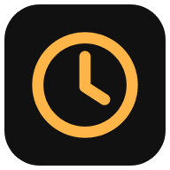

Política de privacidad
Cuadre · última actualización: 6 de noviembre de 2026
Cuadre es una app gratuita para organizar proyectos, tareas, tareas diarias y notas. Esta página explica, sin letra pequeña, qué datos guarda, dónde y qué puedes hacer con ellos.
Quién es el responsable
Cuadre lo desarrolla y mantiene una persona particular en España, no una empresa. Para cualquier duda o petición sobre tus datos escribe a CONTACT_EMAIL.
Qué datos guardamos
- Tu cuenta: email y contraseña (la contraseña se guarda cifrada; nadie puede leerla).
- Tu perfil: el nombre que pongas, tu zona horaria y qué módulos usas.
- Lo que apuntas: tareas, recordatorios, notas, proyectos, tareas diarias (con los días que las hiciste) y las imágenes que pongas como icono.
- Avisos: si los activas, una dirección técnica de tu móvil para poder enviarte notificaciones.
No usamos publicidad, no vendemos datos y no usamos herramientas de rastreo ni analítica de terceros.
Para qué los usamos
Solo para que la app funcione: mostrarte tus cosas en tus dispositivos, enviarte los recordatorios que pidas y entender lo que escribes en ＋. La base legal es la ejecución del servicio que pides al crear la cuenta.
Quién más los trata
| Servicio | Para qué | Dónde |
|---|---|---|
| Supabase | Base de datos y cuentas | Servidores en Europa |
| Vercel | Publicar la app y ejecutar el servidor | Estados Unidos y otros países |
| DeepSeek | La IA que entiende lo que escribes en ＋. Solo recibe ese texto y los nombres de tus proyectos, no tu email | China |
| Apple, Google, Mozilla o Microsoft | Entregar las notificaciones a tu móvil o navegador, si las activas | Según tu dispositivo |
| Google Calendar | Solo si pulsas «Añadir a Google Calendar»: se abre Google con los datos de ese recordatorio y tú decides si guardarlo |
Algunos de estos servicios están fuera del Espacio Económico Europeo. En particular, lo que escribes en ＋ se envía a DeepSeek, en China, que no tiene una decisión de adecuación de la UE. Si no quieres que eso ocurra, no uses ＋: puedes crear tareas, notas y proyectos a mano desde cada pantalla.
Cuánto tiempo
Mientras tengas la cuenta. Las tareas terminadas se borran solas a los 7 días. Si borras tu cuenta, se borra todo al momento.
Tus derechos
Puedes ver y corregir tus datos en la app, y borrar tu cuenta y todo su contenido en Ajustes → Cuenta → Borrar mi cuenta. También puedes pedir acceso, rectificación, supresión, oposición o portabilidad escribiendo al email de arriba, y reclamar ante la Agencia Española de Protección de Datos.
Menores
Cuadre no está pensada para menores de 14 años.
Cambios
Si esta política cambia de forma importante, lo diremos en la app.